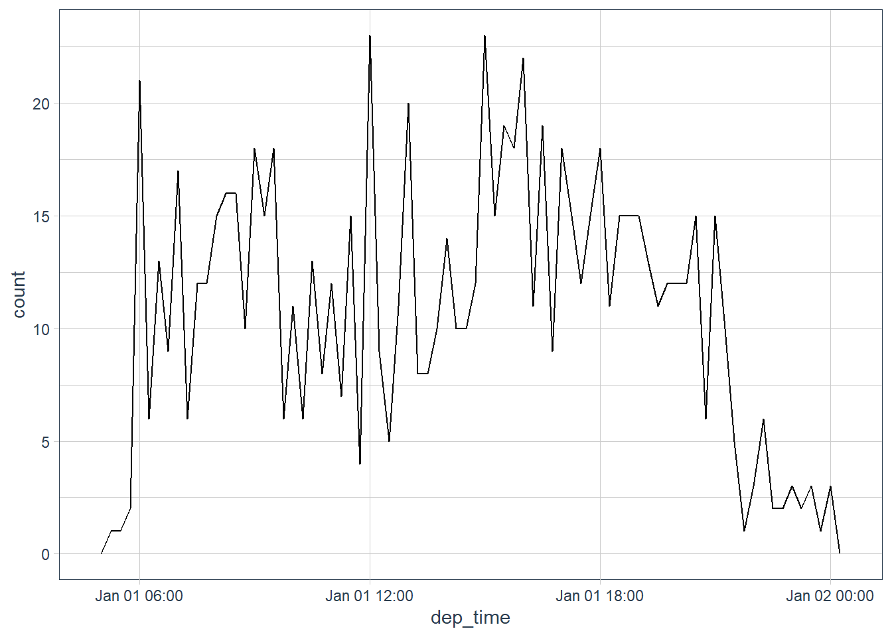
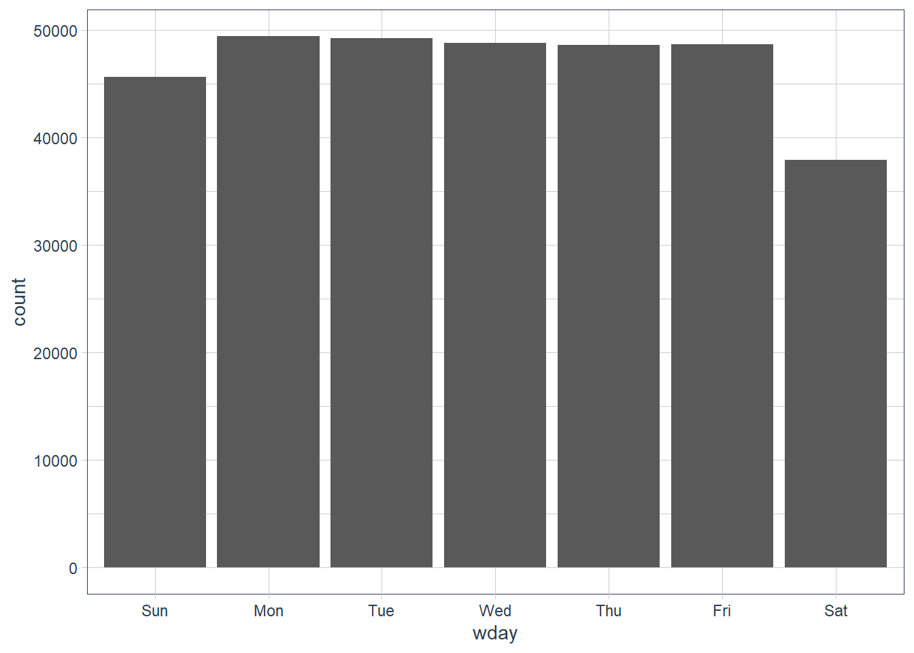
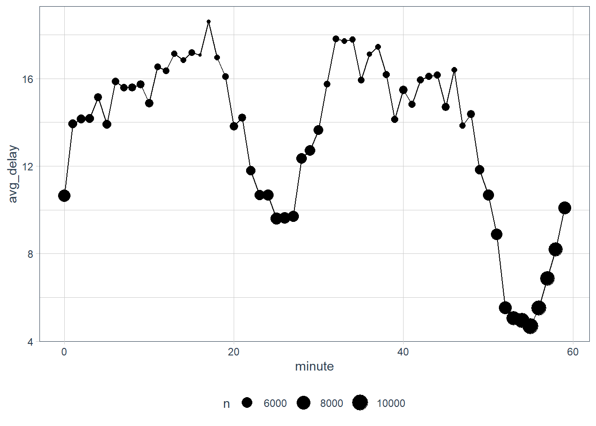
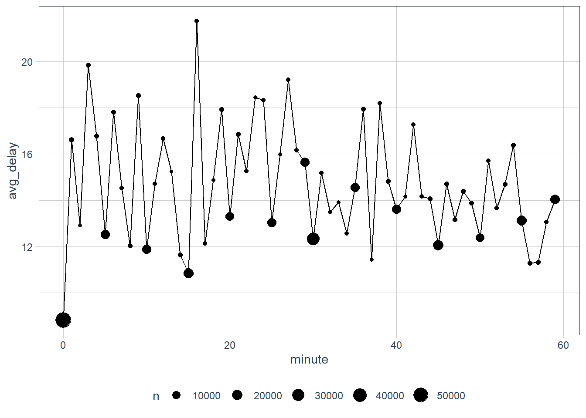
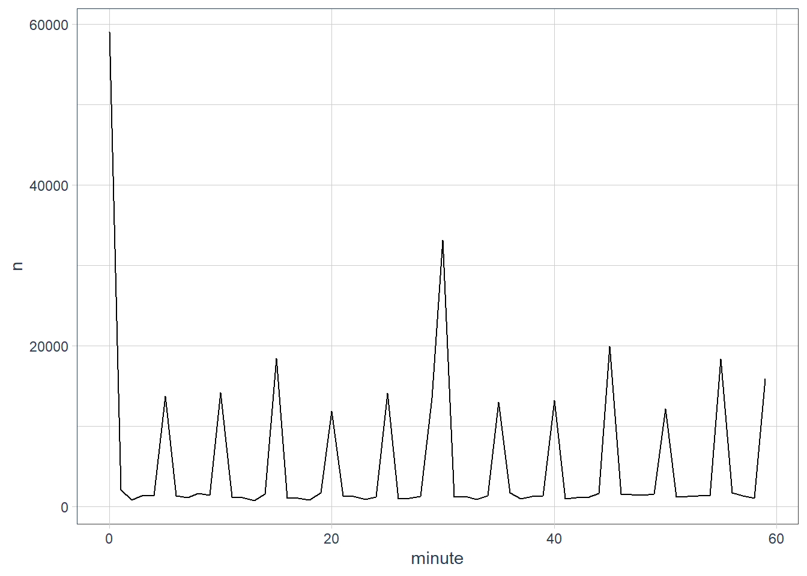
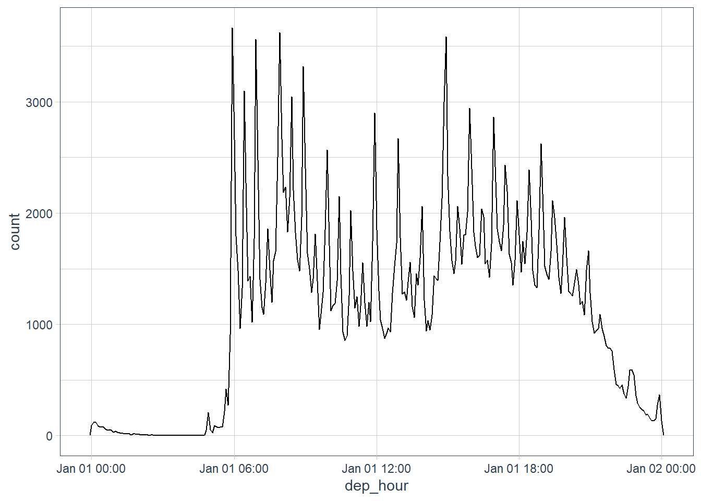
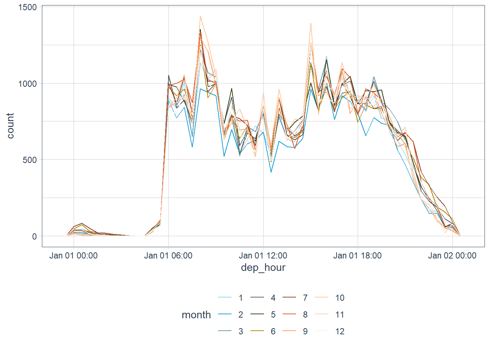
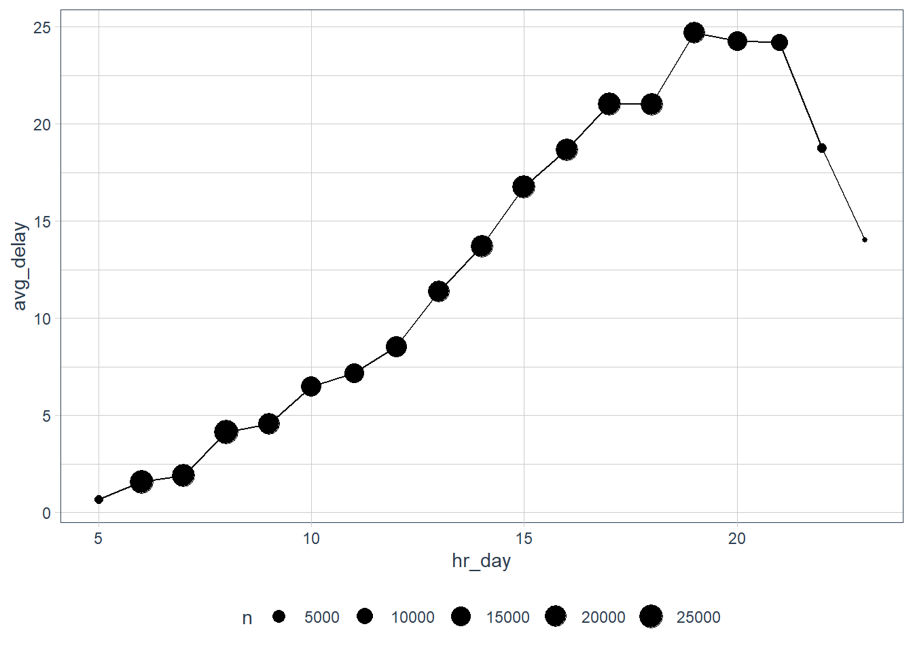
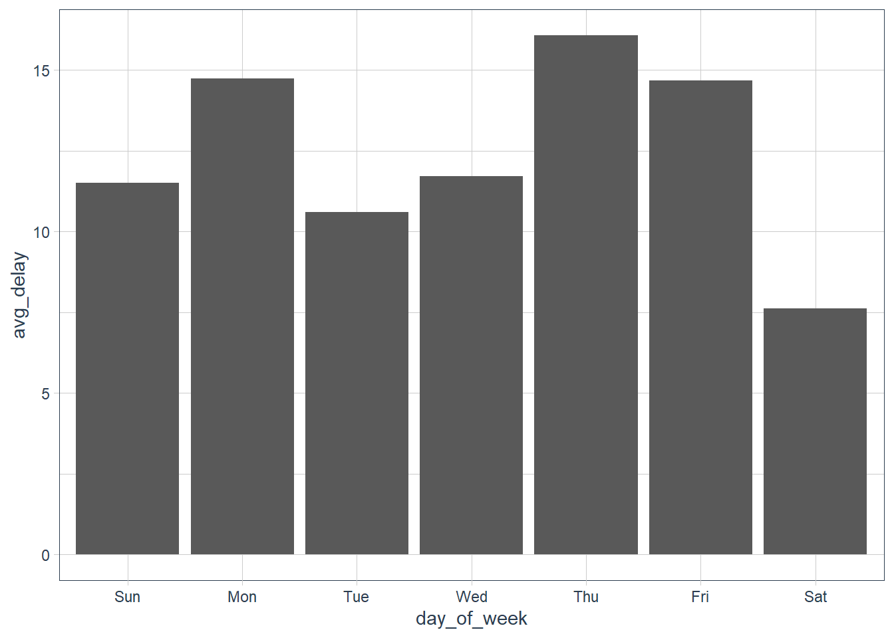
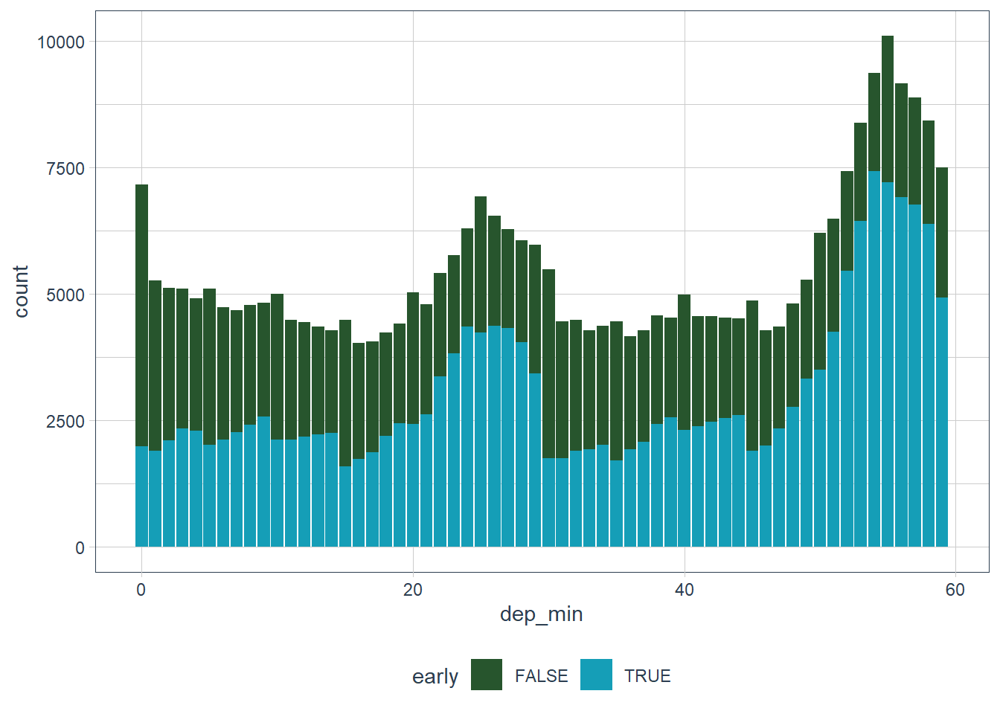

Chapter 13 - Dates and Time with {lubridate}
Vebash Naidoo
08/11/2020
Last updated: 2020-11-08
Checks: 7 0
Knit directory: r4ds_book/
This reproducible R Markdown analysis was created with workflowr (version 1.6.2). The Checks tab describes the reproducibility checks that were applied when the results were created. The Past versions tab lists the development history.
Great! Since the R Markdown file has been committed to the Git repository, you know the exact version of the code that produced these results.
Great job! The global environment was empty. Objects defined in the global environment can affect the analysis in your R Markdown file in unknown ways. For reproduciblity it’s best to always run the code in an empty environment.
The command set.seed(20200814) was run prior to running the code in the R Markdown file. Setting a seed ensures that any results that rely on randomness, e.g. subsampling or permutations, are reproducible.
Great job! Recording the operating system, R version, and package versions is critical for reproducibility.
Nice! There were no cached chunks for this analysis, so you can be confident that you successfully produced the results during this run.
Great job! Using relative paths to the files within your workflowr project makes it easier to run your code on other machines.
Great! You are using Git for version control. Tracking code development and connecting the code version to the results is critical for reproducibility.
The results in this page were generated with repository version b67f0a7. See the Past versions tab to see a history of the changes made to the R Markdown and HTML files.
Note that you need to be careful to ensure that all relevant files for the analysis have been committed to Git prior to generating the results (you can use wflow_publish or wflow_git_commit). workflowr only checks the R Markdown file, but you know if there are other scripts or data files that it depends on. Below is the status of the Git repository when the results were generated:
Ignored files:
Ignored: .Rproj.user/
Untracked files:
Untracked: analysis/images/
Untracked: code_snipp.txt
Note that any generated files, e.g. HTML, png, CSS, etc., are not included in this status report because it is ok for generated content to have uncommitted changes.
These are the previous versions of the repository in which changes were made to the R Markdown (analysis/ch13_datetimes.Rmd) and HTML (docs/ch13_datetimes.html) files. If you’ve configured a remote Git repository (see ?wflow_git_remote), click on the hyperlinks in the table below to view the files as they were in that past version.
| File | Version | Author | Date | Message |
|---|---|---|---|---|
| Rmd | b67f0a7 | sciencificity | 2020-11-08 | added ch13 |
Date and Times
Click on the tab buttons below for each section
Create Date and Times
Create Date and Times
today()
#> [1] "2020-11-08"
now()
#> [1] "2020-11-08 18:03:47 SAST"From Strings
Dates
ymd("2017-01-31")
#> [1] "2017-01-31"
mdy("january 31st, 2017")
#> [1] "2017-01-31"
dmy("31-Jan-2017")
#> [1] "2017-01-31"
ymd(20170131)
#> [1] "2017-01-31"Date Times
ymd_hms("2017-01-31 20:11:59")
#> [1] "2017-01-31 20:11:59 UTC"
mdy_hm("01/31/2017 08:01")
#> [1] "2017-01-31 08:01:00 UTC"
# force a dttm creation by supplying a tz
ymd(20170131, tz = "UTC")
#> [1] "2017-01-31 UTC"
dmy(31012017, tz = "Africa/Johannesburg")
#> [1] "2017-01-31 SAST"From Individual Components
Sometimes date and time components are scattered over multiple columns in your data. This is the case in the flights data.
You can use make_date() and make_datetime() to create a date or dttm field.
flights %>%
select(year:day, hour, minute)
#> # A tibble: 336,776 x 5
#> year month day hour minute
#>
#> 1 2013 1 1 5 15
#> 2 2013 1 1 5 29
#> 3 2013 1 1 5 40
#> 4 2013 1 1 5 45
#> 5 2013 1 1 6 0
#> 6 2013 1 1 5 58
#> 7 2013 1 1 6 0
#> 8 2013 1 1 6 0
#> 9 2013 1 1 6 0
#> 10 2013 1 1 6 0
#> # ... with 336,766 more rows
flights %>%
select(year:day, hour, minute) %>%
mutate(
departure = make_datetime(year = year, month = month, day = day,
hour = hour, min = minute)
)
#> # A tibble: 336,776 x 6
#> year month day hour minute departure
#>
#> 1 2013 1 1 5 15 2013-01-01 05:15:00
#> 2 2013 1 1 5 29 2013-01-01 05:29:00
#> 3 2013 1 1 5 40 2013-01-01 05:40:00
#> 4 2013 1 1 5 45 2013-01-01 05:45:00
#> 5 2013 1 1 6 0 2013-01-01 06:00:00
#> 6 2013 1 1 5 58 2013-01-01 05:58:00
#> 7 2013 1 1 6 0 2013-01-01 06:00:00
#> 8 2013 1 1 6 0 2013-01-01 06:00:00
#> 9 2013 1 1 6 0 2013-01-01 06:00:00
#> 10 2013 1 1 6 0 2013-01-01 06:00:00
#> # ... with 336,766 more rows make_dttm <- function(year, month, day, time){
# this func will make a proper dttm for the dep_time,
# sched_dep_time etc.
make_datetime(year, month, day,
# divide by 100 and get the integer part - hour part
time %/% 100,
# divide by 100 and get the remainder - minutes part
time %% 100
)
}
(flights_dt <- flights %>%
filter(!is.na(dep_time), !is.na(arr_time)) %>%
mutate(
dep_time = make_dttm(year, month, day, dep_time),
sched_dep_time = make_dttm(year, month, day, sched_dep_time),
arr_time = make_dttm(year, month, day, arr_time),
sched_arr_time = make_dttm(year, month, day, sched_arr_time)
) %>%
select(origin, dest, ends_with("delay"), ends_with("time")))
#> # A tibble: 328,063 x 9
#> origin dest dep_delay arr_delay dep_time sched_dep_time
#>
#> 1 EWR IAH 2 11 2013-01-01 05:17:00 2013-01-01 05:15:00
#> 2 LGA IAH 4 20 2013-01-01 05:33:00 2013-01-01 05:29:00
#> 3 JFK MIA 2 33 2013-01-01 05:42:00 2013-01-01 05:40:00
#> 4 JFK BQN -1 -18 2013-01-01 05:44:00 2013-01-01 05:45:00
#> 5 LGA ATL -6 -25 2013-01-01 05:54:00 2013-01-01 06:00:00
#> 6 EWR ORD -4 12 2013-01-01 05:54:00 2013-01-01 05:58:00
#> 7 EWR FLL -5 19 2013-01-01 05:55:00 2013-01-01 06:00:00
#> 8 LGA IAD -3 -14 2013-01-01 05:57:00 2013-01-01 06:00:00
#> 9 JFK MCO -3 -8 2013-01-01 05:57:00 2013-01-01 06:00:00
#> 10 LGA ORD -2 8 2013-01-01 05:58:00 2013-01-01 06:00:00
#> # ... with 328,053 more rows, and 3 more variables: arr_time ,
#> # sched_arr_time , air_time
flights_dt %>%
ggplot(aes(dep_time)) +
# how's the distribution across the year looking?
geom_freqpoly(binwidth = 24*60*60) # binwidth = 1 day 
flights_dt %>%
filter(dep_time < ymd(20130102)) %>%
ggplot(aes(dep_time)) +
# how's the distribution of dep times across a day looking
geom_freqpoly(binwidth = 15 * 60) # how's it looking every 15 min
Note that when you use date-times in a numeric context (like in a histogram), 1 means 1 second, so a binwidth of 86400 means one day. For dates, 1 means 1 day.
From other types
You may want to switch between a date-time and a date. That’s the job of as_datetime() and as_date().
as_datetime(today()) # today() returns a date, convert to dttm
#> [1] "2020-11-08 UTC"
as_date(now()) # now() returns a dttm, convert to date
#> [1] "2020-11-08"Sometimes you’ll get date/times as numeric offsets from the “Unix Epoch”, 1970-01-01. If the offset is in seconds, use as_datetime(); if it’s in days, use as_date().
as_datetime(60 * 60 * 10) # add 10 hours to default dttm 1970-01-01 UTC
#> [1] "1970-01-01 10:00:00 UTC"
as_datetime(0) # default dttm
#> [1] "1970-01-01 UTC"
as_date(365 * 10 + 2) # add 10 years (365 * 10) + 2 days to get to 1980-01-01
#> [1] "1980-01-01"
as_date(365 * 10) # add 10 years - 365 days per year * 10
#> [1] "1979-12-30"
as_date(0) # default date (add 0 days)
#> [1] "1970-01-01"
as_date(10) # add 10 days to default
#> [1] "1970-01-11"
make_date() # default == Unix Epoch Date
#> [1] "1970-01-01"
make_datetime() # default == Unix Epoch Date
#> [1] "1970-01-01 UTC"Exercises
What happens if you parse a string that contains invalid dates?
ymd(c("2010-10-10", "bananas"))ymd(c("2010-10-10", "bananas")) #> Warning: 1 failed to parse. #> [1] "2010-10-10" NAYou get a warning that some failed to parse.
What does the
tzoneargument totoday()do? Why is it important?The
today()andnow()uses your computer’s time and date. This is usually accurate for your timezone. For example I am in South Africa so you would see SAST when I callnow().But you may want to do analyses that involve other timezones, or UTC itself. You can use this argument to adjust to the timezone you’re interested in.
today() #> [1] "2020-11-08" (utc_today <- today(tzone = "UTC")) #> [1] "2020-11-08" utc_today == today() #> [1] TRUE utc_today == today(tzone = "GMT") #> [1] TRUE now() #> [1] "2020-11-08 18:03:52 SAST" now("UTC") #> [1] "2020-11-08 16:03:52 UTC"Use the appropriate lubridate function to parse each of the following dates:
d1 <- "January 1, 2010" mdy(d1) #> [1] "2010-01-01" d2 <- "2015-Mar-07" ymd(d2) #> [1] "2015-03-07" d3 <- "06-Jun-2017" dmy(d3) #> [1] "2017-06-06" d4 <- c("August 19 (2015)", "July 1 (2015)") mdy(d4) #> [1] "2015-08-19" "2015-07-01" d5 <- "12/30/14" # Dec 30, 2014 mdy(d5) #> [1] "2014-12-30"
Date-time components
Date-time components
We will focus on the accessor functions that let you get and set individual components.
Getting components
year()month()mday()(day of the month)yday()(day of the year)wday()(day of the week)hour(),minute(), andsecond()
(datetime <- ymd_hms("2016-07-08 12:34:56"))
#> [1] "2016-07-08 12:34:56 UTC"
year(datetime)
#> [1] 2016
month(datetime)
#> [1] 7
mday(datetime)
#> [1] 8
yday(datetime)
#> [1] 190
wday(datetime)
#> [1] 6
wday(datetime,
label = TRUE) # abbreviated weekday day instead of number
#> [1] Fri
#> Levels: Sun < Sat
wday(datetime,
label = TRUE,
abbr = FALSE) # full weekday name
#> [1] Friday
#> 7 Levels: Sunday < Saturday
hour(datetime)
#> [1] 12
minute(datetime)
#> [1] 34
second(datetime)
#> [1] 56
month(datetime,
label = TRUE) # abbreviated month name instead of number
#> [1] Jul
#> 12 Levels: Jan < Dec
month(datetime, label = TRUE,
abbr = FALSE) # full month name instead of number
#> [1] July
#> 12 Levels: January(current_dt <- now())
#> [1] "2020-11-08 18:03:52 SAST"
year(current_dt)
#> [1] 2020
month(current_dt)
#> [1] 11
mday(current_dt)
#> [1] 8
yday(current_dt)
#> [1] 313
wday(current_dt) # sunday
#> [1] 1
wday(current_dt,
label = TRUE) # abbreviated weekday day instead of number
#> [1] Sun
#> Levels: Sun < Mon < Tue < Wed < Thu < Fri < Sat
wday(current_dt,
label = TRUE,
abbr = FALSE) # full weekday name
#> [1] Sunday
#> 7 Levels: Sunday < Monday < Tuesday < Wednesday < Thursday < ... < Saturday
hour(current_dt)
#> [1] 18
minute(current_dt)
#> [1] 3
second(current_dt)
#> [1] 52.68122
month(current_dt,
label = TRUE) # abbreviated month name instead of number
#> [1] Nov
#> 12 Levels: Jan < Feb < Mar < Apr < May < Jun < Jul < Aug < Sep < ... < Dec
month(current_dt, label = TRUE,
abbr = FALSE) # full month name instead of number
#> [1] November
#> 12 Levels: January < February < March < April < May < June < ... < December# wday() shows that more flights depart in the week
flights_dt %>%
mutate(wday = wday(dep_time, label = TRUE)) %>%
ggplot(aes(x = wday)) +
geom_bar()
# interesting that flights at certain minutes in
# an hour experience lower delays
flights_dt %>%
mutate(minute = minute(dep_time)) %>%
group_by(minute) %>%
summarise(avg_delay = mean(dep_delay, na.rm = TRUE),
n = n()) %>%
ggplot(aes(minute, avg_delay)) +
geom_line() +
geom_point(aes(size = n))
# the scheduled departure time, does not show such
(sched_dep <- flights_dt %>%
mutate(minute = minute(sched_dep_time)) %>%
group_by(minute) %>%
summarise(avg_delay = mean(dep_delay, na.rm = TRUE),
n = n()))
#> # A tibble: 60 x 3
#> minute avg_delay n
#> <int> <dbl> <int>
#> 1 0 8.82 59019
#> 2 1 16.6 2085
#> 3 2 12.9 818
#> 4 3 19.8 1381
#> 5 4 16.8 1323
#> 6 5 12.5 13720
#> 7 6 17.8 1345
#> 8 7 14.5 1068
#> 9 8 12.0 1649
#> 10 9 18.5 1411
#> # ... with 50 more rows
sched_dep %>%
ggplot(aes(minute, avg_delay)) +
geom_line() +
geom_point(aes(size = n))
sched_dep %>%
ggplot(aes(minute, n)) +
geom_line()
You may also round a date to a nearby unit of time, with floor_date(), round_date(), and ceiling_date().
Each function takes a vector of dates to change, and then the name of the unit to round down (floor), round up (ceiling), or round to.
(x <- ymd_hms("2020-08-08 12:01:59.93")) # Saturday 8th Aug
#> [1] "2020-08-08 12:01:59 UTC"
round_date(x, ".5s")
#> [1] "2020-08-08 12:02:00 UTC"
round_date(x, "sec")
#> [1] "2020-08-08 12:02:00 UTC"
round_date(x, "second")
#> [1] "2020-08-08 12:02:00 UTC"
round_date(x, "minute")
#> [1] "2020-08-08 12:02:00 UTC"
round_date(x, "5 mins")
#> [1] "2020-08-08 12:00:00 UTC"
round_date(x, "hour")
#> [1] "2020-08-08 12:00:00 UTC"
round_date(x, "2 hours")
#> [1] "2020-08-08 12:00:00 UTC"
round_date(x, "day") # it's past afternoon so closer to tomorrow
#> [1] "2020-08-09 UTC"
round_date(x, "week")
#> [1] "2020-08-09 UTC"
round_date(x, "month")
#> [1] "2020-08-01 UTC"
round_date(x, "bimonth") # 1,3,5,7,9,11 are the bimonths
#> [1] "2020-09-01 UTC"
round_date(x, "quarter")
#> [1] "2020-07-01 UTC"
round_date(x, "quarter") == round_date(x, "3 months")
#> [1] TRUE
round_date(x, "halfyear")
#> [1] "2020-07-01 UTC"
round_date(x, "year")
#> [1] "2021-01-01 UTC"
round_date(x, "season")
#> [1] "2020-09-01 UTC"(x <- ymd_hms("2020-08-08 12:01:59.93")) # Saturday 8th Aug
#> [1] "2020-08-08 12:01:59 UTC"
floor_date(x, ".5s")
#> [1] "2020-08-08 12:01:59 UTC"
floor_date(x, "sec")
#> [1] "2020-08-08 12:01:59 UTC"
floor_date(x, "second")
#> [1] "2020-08-08 12:01:59 UTC"
floor_date(x, "minute")
#> [1] "2020-08-08 12:01:00 UTC"
floor_date(x, "5 mins")
#> [1] "2020-08-08 12:00:00 UTC"
floor_date(x, "hour")
#> [1] "2020-08-08 12:00:00 UTC"
floor_date(x, "2 hours")
#> [1] "2020-08-08 12:00:00 UTC"
floor_date(x, "day") # floor of date hence still today even though closer to tomorrow
#> [1] "2020-08-08 UTC"
floor_date(x, "week") # floor so last sunday NOT tomorrow
#> [1] "2020-08-02 UTC"
floor_date(x, "month")
#> [1] "2020-08-01 UTC"
floor_date(x, "bimonth") # 1,3,5,7,9,11 are the bimonths
#> [1] "2020-07-01 UTC"
floor_date(x, "quarter")
#> [1] "2020-07-01 UTC"
floor_date(x, "quarter") == floor_date(x, "3 months")
#> [1] TRUE
floor_date(x, "halfyear")
#> [1] "2020-07-01 UTC"
floor_date(x, "year")
#> [1] "2020-01-01 UTC"
floor_date(x, "season")
#> [1] "2020-06-01 UTC"(x <- ymd_hms("2020-08-08 12:01:59.93")) # Saturday 8th Aug
#> [1] "2020-08-08 12:01:59 UTC"
ceiling_date(x, ".5s")
#> [1] "2020-08-08 12:02:00 UTC"
ceiling_date(x, "sec")
#> [1] "2020-08-08 12:02:00 UTC"
ceiling_date(x, "second")
#> [1] "2020-08-08 12:02:00 UTC"
ceiling_date(x, "minute")
#> [1] "2020-08-08 12:02:00 UTC"
ceiling_date(x, "5 mins")
#> [1] "2020-08-08 12:05:00 UTC"
ceiling_date(x, "hour")
#> [1] "2020-08-08 13:00:00 UTC"
ceiling_date(x, "2 hours")
#> [1] "2020-08-08 14:00:00 UTC"
ceiling_date(x, "day") # ceiling of date hence tomorrow
#> [1] "2020-08-09 UTC"
# ceiling so tomorrow which is start of new week
# Sunday 9th August 2020
ceiling_date(x, "week")
#> [1] "2020-08-09 UTC"
ceiling_date(x, "month")
#> [1] "2020-09-01 UTC"
ceiling_date(x, "bimonth") # 1,3,5,7,9,11 are the bimonths
#> [1] "2020-09-01 UTC"
ceiling_date(x, "quarter")
#> [1] "2020-10-01 UTC"
ceiling_date(x, "quarter") == ceiling_date(x, "3 months")
#> [1] TRUE
ceiling_date(x, "halfyear")
#> [1] "2021-01-01 UTC"
ceiling_date(x, "year")
#> [1] "2021-01-01 UTC"
ceiling_date(x, "season")
#> [1] "2020-09-01 UTC"Setting components
You can also use each accessor function to set the components of a date/time. Note that the accessor functions now appear on the left hand side of <-.
(datetime <- ymd_hms("2016-07-08 12:34:56"))
#> [1] "2016-07-08 12:34:56 UTC"
# change year
year(datetime) <- 2020
datetime
#> [1] "2020-07-08 12:34:56 UTC"
# change month
month(datetime) <- 01
datetime
#> [1] "2020-01-08 12:34:56 UTC"
# progress time by 1 hr
hour(datetime) <- hour(datetime) + 1
datetime
#> [1] "2020-01-08 13:34:56 UTC"Alternatively, rather than modifying in place, you can create a new date-time with update(). This also allows you to set multiple values at once.
update(datetime,
year = 2020,
month = 02,
mday = 02,
hour = 15)
#> [1] "2020-02-02 15:34:56 UTC"
datetime
#> [1] "2020-01-08 13:34:56 UTC"
# entered a too big date / hour / min?
# these roll over
ymd("2020-02-27") %>%
update(mday = 29)
#> [1] "2020-02-29"
ymd("2020-02-27") %>%
update(mday = 30, hour = 22,
min = 65)
#> [1] "2020-03-01 23:05:00 UTC"flights_dt %>%
# ignore the date, let's make a new date that pulls all observations
# back to the 1st of Jan
mutate(dep_hour = update(dep_time, yday = 1)) %>%
arrange(desc(sched_dep_time)) %>%
head(10) %>%
print(width = Inf)
#> # A tibble: 10 x 10
#> origin dest dep_delay arr_delay dep_time sched_dep_time
#> <chr> <chr> <dbl> <dbl> <dttm> <dttm>
#> 1 JFK BQN 14 2 2013-12-31 00:13:00 2013-12-31 23:59:00
#> 2 JFK SJU 19 5 2013-12-31 00:18:00 2013-12-31 23:59:00
#> 3 JFK SJU -4 -10 2013-12-31 23:55:00 2013-12-31 23:59:00
#> 4 JFK PSE -3 -9 2013-12-31 23:56:00 2013-12-31 23:59:00
#> 5 EWR SJU -2 3 2013-12-31 23:28:00 2013-12-31 23:30:00
#> 6 JFK BOS 15 11 2013-12-31 23:10:00 2013-12-31 22:55:00
#> 7 JFK SYR -5 3 2013-12-31 22:45:00 2013-12-31 22:50:00
#> 8 JFK BUF 31 38 2013-12-31 23:21:00 2013-12-31 22:50:00
#> 9 JFK PWM 101 96 2013-12-31 00:26:00 2013-12-31 22:45:00
#> 10 JFK BTV -10 -4 2013-12-31 22:35:00 2013-12-31 22:45:00
#> arr_time sched_arr_time air_time dep_hour
#> <dttm> <dttm> <dbl> <dttm>
#> 1 2013-12-31 04:39:00 2013-12-31 04:37:00 189 2013-01-01 00:13:00
#> 2 2013-12-31 04:49:00 2013-12-31 04:44:00 192 2013-01-01 00:18:00
#> 3 2013-12-31 04:30:00 2013-12-31 04:40:00 195 2013-01-01 23:55:00
#> 4 2013-12-31 04:36:00 2013-12-31 04:45:00 200 2013-01-01 23:56:00
#> 5 2013-12-31 04:12:00 2013-12-31 04:09:00 198 2013-01-01 23:28:00
#> 6 2013-12-31 00:07:00 2013-12-31 23:56:00 40 2013-01-01 23:10:00
#> 7 2013-12-31 23:59:00 2013-12-31 23:56:00 51 2013-01-01 22:45:00
#> 8 2013-12-31 00:46:00 2013-12-31 00:08:00 66 2013-01-01 23:21:00
#> 9 2013-12-31 01:29:00 2013-12-31 23:53:00 50 2013-01-01 00:26:00
#> 10 2013-12-31 23:51:00 2013-12-31 23:55:00 49 2013-01-01 22:35:00
# let's visualise how many flights leave at different hours in
# the day by pretending all flights occurred on the same day
# the 1st Jan
flights_dt %>%
mutate(dep_hour = update(dep_time, yday = 1)) %>%
ggplot(aes(dep_hour)) +
geom_freqpoly(binwidth = 60 * 5) # every 5 min
Exercises
How does the distribution of flight times within a day change over the course of the year?
# devtools::install_github("sciencificity/werpals") library(werpals) flights_dt %>% mutate(month = factor(month(dep_time)), dep_hour = update(dep_time, yday = 1)) %>% ggplot(aes(dep_hour, colour = month)) + geom_freqpoly(binwidth = 60 * 30) + scale_colour_nature(palette = "bryce")
Feb is lower but it has less days as well.
Compare
dep_time,sched_dep_timeanddep_delay. Are they consistent? Explain your findings.The \(sched\_dep\_time + dep\_delay = dep\_time\). It does for most observations but there is a handful that does not meet this relationship.
flights %>% select(year, month, day, hour, minute, dep_time, sched_dep_time, dep_delay) #> # A tibble: 336,776 x 8 #> year month day hour minute dep_time sched_dep_time dep_delay #> <int> <int> <int> <dbl> <dbl> <int> <int> <dbl> #> 1 2013 1 1 5 15 517 515 2 #> 2 2013 1 1 5 29 533 529 4 #> 3 2013 1 1 5 40 542 540 2 #> 4 2013 1 1 5 45 544 545 -1 #> 5 2013 1 1 6 0 554 600 -6 #> 6 2013 1 1 5 58 554 558 -4 #> 7 2013 1 1 6 0 555 600 -5 #> 8 2013 1 1 6 0 557 600 -3 #> 9 2013 1 1 6 0 557 600 -3 #> 10 2013 1 1 6 0 558 600 -2 #> # ... with 336,766 more rows flights_dt %>% select(dep_time, sched_dep_time, dep_delay) %>% mutate(act_dep_time = sched_dep_time + hms(str_glue("0, {dep_delay}, 0"))) %>% filter(dep_time != act_dep_time) #> # A tibble: 1,205 x 4 #> dep_time sched_dep_time dep_delay act_dep_time #> <dttm> <dttm> <dbl> <dttm> #> 1 2013-01-01 08:48:00 2013-01-01 18:35:00 853 2013-01-02 08:48:00 #> 2 2013-01-02 00:42:00 2013-01-02 23:59:00 43 2013-01-03 00:42:00 #> 3 2013-01-02 01:26:00 2013-01-02 22:50:00 156 2013-01-03 01:26:00 #> 4 2013-01-03 00:32:00 2013-01-03 23:59:00 33 2013-01-04 00:32:00 #> 5 2013-01-03 00:50:00 2013-01-03 21:45:00 185 2013-01-04 00:50:00 #> 6 2013-01-03 02:35:00 2013-01-03 23:59:00 156 2013-01-04 02:35:00 #> 7 2013-01-04 00:25:00 2013-01-04 23:59:00 26 2013-01-05 00:25:00 #> 8 2013-01-04 01:06:00 2013-01-04 22:45:00 141 2013-01-05 01:06:00 #> 9 2013-01-05 00:14:00 2013-01-05 23:59:00 15 2013-01-06 00:14:00 #> 10 2013-01-05 00:37:00 2013-01-05 22:30:00 127 2013-01-06 00:37:00 #> # ... with 1,195 more rowsCompare
air_timewith the duration between the departure and arrival. Explain your findings. (Hint: consider the location of the airport.)flights_dt %>% select(origin, dest, dep_time, arr_time, air_time) %>% filter(!is.na(air_time), !is.na(dep_time), !is.na(arr_time)) %>% mutate(dest_same_tz = dep_time + hms(str_glue("0, {air_time}, 0"))) %>% filter(arr_time == dest_same_tz) #> # A tibble: 196 x 6 #> origin dest dep_time arr_time air_time #> <chr> <chr> <dttm> <dttm> <dbl> #> 1 LGA BNA 2013-01-07 11:50:00 2013-01-07 13:41:00 111 #> 2 EWR MSP 2013-01-13 19:47:00 2013-01-13 22:18:00 151 #> 3 LGA MDW 2013-01-16 06:51:00 2013-01-16 09:14:00 143 #> 4 EWR HOU 2013-01-16 07:07:00 2013-01-16 11:06:00 239 #> 5 LGA BNA 2013-01-16 09:43:00 2013-01-16 12:11:00 148 #> 6 LGA BNA 2013-01-25 16:19:00 2013-01-25 18:26:00 127 #> 7 EWR ORD 2013-01-30 10:16:00 2013-01-30 12:34:00 138 #> 8 EWR ORD 2013-01-30 14:19:00 2013-01-30 16:14:00 115 #> 9 EWR ORD 2013-01-30 21:55:00 2013-01-30 23:47:00 112 #> 10 LGA ORD 2013-10-02 18:53:00 2013-10-02 20:45:00 112 #> # ... with 186 more rows, and 1 more variable: dest_same_tz <dttm>There are only a few where the \(dep\_time + air\_time = arr\_time\). If you look at the dest vs the origin I would have suspected that the airports in the same timezone align but LGA and ORD are different timezones and they align, LGA and BNA also and others too. So truly I am unsure without further digging.
How does the average delay time change over the course of a day? Should you use
dep_timeorsched_dep_time? Why?flights_dt %>% mutate(sched_dep_hr = update(sched_dep_time, yday = 1), hr_day = hour(sched_dep_hr)) %>% group_by(hr_day) %>% summarise(avg_delay = mean(dep_delay, na.rm = TRUE), n = n()) %>% ggplot(aes(hr_day, avg_delay)) + geom_point(aes(size = n)) + geom_line()
I used
sched_dep_timesince that is when the flight should have left and is a more accurate reflection of how delay time changes over the course of a day.On what day of the week should you leave if you want to minimise the chance of a delay?
flights_dt %>% mutate(day_of_week = wday(sched_dep_time, abbr = TRUE, label = TRUE)) %>% group_by(day_of_week) %>% summarise(avg_delay = mean(dep_delay, na.rm = TRUE), n = n()) %>% ggplot(aes(day_of_week, avg_delay)) + geom_col()
You best leave on Saturday.
What makes the distribution of
diamonds$caratandflights$sched_dep_timesimilar?diamonds %>% count(carat, sort = TRUE) #> # A tibble: 273 x 2 #> carat n #> <dbl> <int> #> 1 0.3 2604 #> 2 0.31 2249 #> 3 1.01 2242 #> 4 0.7 1981 #> 5 0.32 1840 #> 6 1 1558 #> 7 0.9 1485 #> 8 0.41 1382 #> 9 0.4 1299 #> 10 0.71 1294 #> # ... with 263 more rows flights_dt %>% mutate(sched_min = minute(sched_dep_time)) %>% count(sched_min, sort = TRUE) #> # A tibble: 60 x 2 #> sched_min n #> <int> <int> #> 1 0 59019 #> 2 30 33104 #> 3 45 19923 #> 4 15 18393 #> 5 55 18347 #> 6 59 15882 #> 7 10 14162 #> 8 25 14057 #> 9 5 13720 #> 10 29 13482 #> # ... with 50 more rows # out of curiosity how does actual dep_time look? flights_dt %>% mutate(min = minute(dep_time)) %>% count(min, sort = TRUE) #> # A tibble: 60 x 2 #> min n #> <int> <int> #> 1 55 10097 #> 2 54 9366 #> 3 56 9161 #> 4 57 8878 #> 5 58 8433 #> 6 53 8378 #> 7 59 7500 #> 8 52 7422 #> 9 0 7160 #> 10 25 6918 #> # ... with 50 more rowsMore flights are scheduled at round numbers that we talk about often; quarter past, half past, 6 ’o clock, etc. The actual departure time is much less aligned with how we talk. We don’t usually talk about out flight being 54 minutes past 5! Except when we were kids learning to tell time, then we’re very precise (ask my 6yo who keeps reminding me when I say it’s nearly half past 8 and time for bed, that actually it is only 8:26 so he has 4 more minutes 😆).
For carats it is similar 0.3, 0.7, 0.4 but there are some anomalies for example 0.32 or 0.31 or even 1.01.
Confirm my hypothesis that the early departures of flights in minutes 20-30 and 50-60 are caused by scheduled flights that leave early. Hint: create a binary variable that tells you whether or not a flight was delayed.
flights_dt %>% filter(!is.na(dep_delay)) %>% mutate(early = dep_delay < 0, dep_min = minute(update(dep_time, yday = 1))) %>% ggplot(aes(dep_min, fill = early)) + geom_bar() + scale_fill_disney(palette = "pan")
The flights that leave in minutes
22 - 29and49 - 59do leave earlier than scheduled.
sessionInfo()
#> R version 3.6.3 (2020-02-29)
#> Platform: x86_64-w64-mingw32/x64 (64-bit)
#> Running under: Windows 10 x64 (build 18363)
#>
#> Matrix products: default
#>
#> locale:
#> [1] LC_COLLATE=English_South Africa.1252 LC_CTYPE=English_South Africa.1252
#> [3] LC_MONETARY=English_South Africa.1252 LC_NUMERIC=C
#> [5] LC_TIME=English_South Africa.1252
#>
#> attached base packages:
#> [1] stats graphics grDevices utils datasets methods base
#>
#> other attached packages:
#> [1] werpals_0.1.0 nycflights13_1.0.1
#> [3] tidyquant_1.0.0 quantmod_0.4.17
#> [5] TTR_0.23-6 PerformanceAnalytics_2.0.4
#> [7] xts_0.12-0 zoo_1.8-7
#> [9] lubridate_1.7.8 magrittr_1.5
#> [11] flair_0.0.2 forcats_0.5.0
#> [13] stringr_1.4.0 dplyr_1.0.0
#> [15] purrr_0.3.4 readr_1.3.1
#> [17] tidyr_1.1.0 tibble_3.0.3
#> [19] ggplot2_3.3.2 tidyverse_1.3.0
#> [21] workflowr_1.6.2
#>
#> loaded via a namespace (and not attached):
#> [1] httr_1.4.2 jsonlite_1.7.0 modelr_0.1.6 assertthat_0.2.1
#> [5] emo_0.0.0.9000 cellranger_1.1.0 yaml_2.2.1 pillar_1.4.6
#> [9] backports_1.1.6 lattice_0.20-38 glue_1.4.2 quadprog_1.5-8
#> [13] digest_0.6.27 promises_1.1.0 rvest_0.3.5 colorspace_1.4-1
#> [17] htmltools_0.5.0 httpuv_1.5.2 pkgconfig_2.0.3 broom_0.5.6
#> [21] haven_2.2.0 scales_1.1.0 whisker_0.4 later_1.0.0
#> [25] git2r_0.26.1 generics_0.0.2 farver_2.0.3 ellipsis_0.3.1
#> [29] withr_2.2.0 cli_2.1.0 crayon_1.3.4 readxl_1.3.1
#> [33] evaluate_0.14 ps_1.3.2 fs_1.5.0 fansi_0.4.1
#> [37] nlme_3.1-144 xml2_1.3.2 tools_3.6.3 hms_0.5.3
#> [41] lifecycle_0.2.0 munsell_0.5.0 reprex_0.3.0 compiler_3.6.3
#> [45] rlang_0.4.8 grid_3.6.3 rstudioapi_0.11 labeling_0.3
#> [49] rmarkdown_2.4 gtable_0.3.0 DBI_1.1.0 curl_4.3
#> [53] R6_2.4.1 knitr_1.28 utf8_1.1.4 rprojroot_1.3-2
#> [57] Quandl_2.10.0 stringi_1.5.3 Rcpp_1.0.4.6 vctrs_0.3.2
#> [61] dbplyr_1.4.3 tidyselect_1.1.0 xfun_0.13